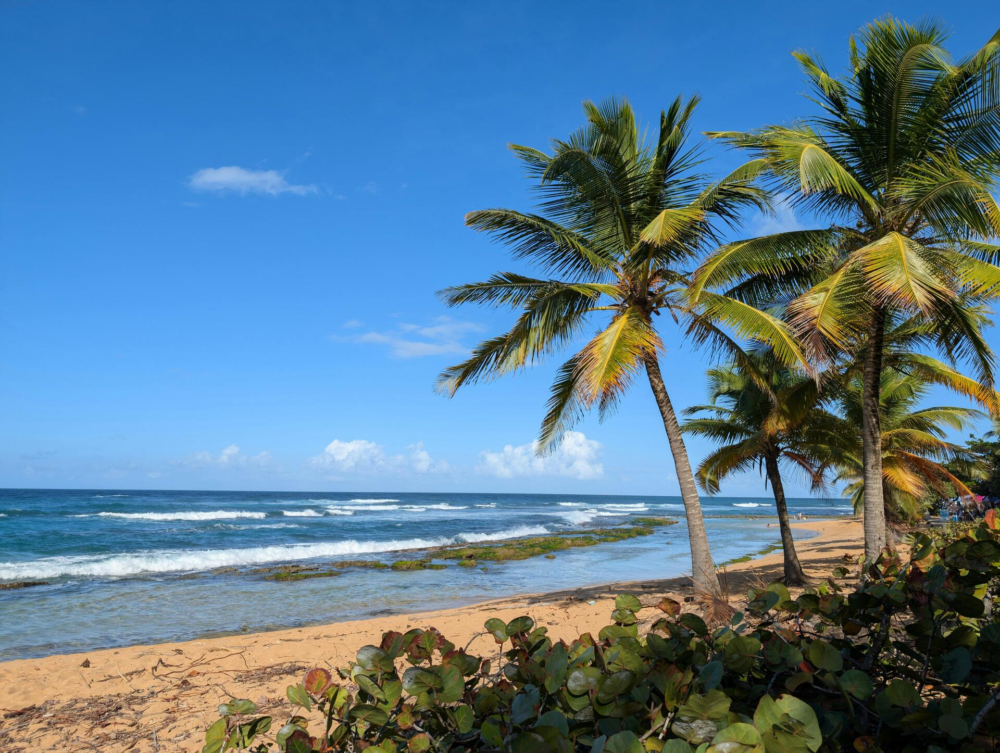

Rincón Surf Tours, Diving & Water Adventures

Rincón sits on Puerto Rico's northwest corner where the Atlantic Ocean meets the Caribbean Sea, and the combination of swells coming from both directions produces surfing conditions that have made the town internationally known since a World Surfing Championship was held here in 1968. The breaks around Rincón—Domes, Maria's, Sandy Beach, Tres Palmas—cover every skill level from longboard-friendly beach breaks to heavy reef waves that charge serious surfers from the US mainland every winter.
But Rincón is more than surf. The northwest coast has dive sites with visibility and marine biodiversity that rivals Fajardo—and fewer boats. Rincon Diving & Snorkeling and 413 Divers both operate here year-round, running everything from guided shore dives to beginner scuba certification courses. And beyond Rincón proper, the towns of Aguadilla and Isabela to the north have their own operators that add surfing and snorkeling options to the northwest corridor.
Browse Rincón and northwest Puerto Rico tours
View Available Tours →Surf Lessons in Rincón and the Northwest
Guided Surfing Adventure (Nomada Tours & Adventures)
Nomada Tours & Adventures operates a guided surfing experience out of Carolina that works for travelers staying in the San Juan area who want an organized surf session without making the 2-hour drive to Rincón. The guided format includes equipment and instruction from the operator's surf guides, who pick breaks appropriate for the group's skill level. Nomada covers multiple water activities—their snorkeling and paddleboard tours operate from the same base.
Company: Nomada Tours & Adventures · Location: Carolina
Check AvailabilitySurfari (Royal Isabela)
Royal Isabela is a golf resort and residential community on the cliffs above the ocean near Isabela, north of Rincón. Their Surfari is a surf experience that draws from the same tradition as upscale surf camps—guided sessions at local breaks, instruction from experienced guides, and the logistics handled by resort staff. Isabela's beaches north of Rincón have consistent surf with fewer crowds than Rincón's most famous spots. Accessible to guests of Royal Isabela; check availability if you're staying elsewhere.
Company: Royal Isabela · Location: Isabela
Check AvailabilityBeginner Breaks (Royal Isabela)
Royal Isabela's beginner-oriented surf lesson is structured for guests who have little or no surf experience. The Isabela coast has beach breaks that are forgiving for learning—softer waves on the right days, sand bottom—which makes the learning progression less intimidating than the heavier reef breaks further south. Instruction focuses on paddling, pop-up technique, and reading the wave before getting in the water.
Company: Royal Isabela · Location: Isabela
Check AvailabilityScuba Diving in Rincón
Rincón's dive sites sit on the northern and western sides of the Rincón peninsula. The underwater topography here is different from Fajardo's protected cays—Rincón diving is more open-water and reef-heavy, with strong currents at some sites that make it more appropriate for certified divers than complete beginners. That said, the operators who work these sites run beginner-appropriate programs at the more protected spots.
Guided Shore Dive (Rincon Diving & Snorkeling)
Rincon Diving & Snorkeling runs guided shore dives at sites accessible from the beach—no boat required. Shore diving is logistically simpler and allows for longer bottom time since you're not constrained by boat schedules. The sites around Rincón's shore have good reef fish populations, occasional nurse sharks, and the coral formations that draw divers to this part of the island. Certification is required; bring your own or rent from the shop.
Company: Rincon Diving & Snorkeling · Location: Rincón
Check AvailabilityDiscover Scuba Diving Adventure (Rincon Diving & Snorkeling)
The Discover Scuba Diving experience at Rincon Diving & Snorkeling is the entry point for non-certified guests who want to try scuba. It's a supervised pool or shallow-water session that covers basic equipment use, breathing technique, and clearing water from the mask—enough to take you to a controlled dive site with an instructor present at all times. No certification required; this is the first step if you're considering getting certified.
Company: Rincon Diving & Snorkeling · Location: Rincón
Check AvailabilityOpen Water Scuba Diver Certification (Rincon Diving & Snorkeling)
For guests who want a full certification, Rincon Diving & Snorkeling runs PADI Open Water Diver courses. The Open Water certification takes 3–4 days to complete and covers classroom academics, pool skills, and four open-water dives. Getting certified in Rincón means your training dives happen on real Caribbean reef—a more interesting learning environment than a pool in a landlocked state. Once certified, you can dive anywhere in the world.
Company: Rincon Diving & Snorkeling · Location: Rincón
Discover Mermaid Experience (Rincon Diving & Snorkeling)
Rincon Diving & Snorkeling offers a mermaid experience that uses a monofin and mermaid tail for underwater swimming without scuba equipment. It's a snorkel-based activity aimed at guests who want an unusual underwater experience—particularly popular for teens and adults who have seen free-diving mermaid performances and want to try the technique. No scuba certification needed; basic swimming ability is required.
Company: Rincon Diving & Snorkeling · Location: Rincón
Check AvailabilityAdaptive Snorkeling Tour (Rincon Diving & Snorkeling)
Rincon Diving & Snorkeling runs an adaptive snorkeling tour specifically designed for guests with physical disabilities or mobility limitations. Adaptive water sports instruction requires additional training and equipment—not all operators offer it. The tour accommodates guests who use wheelchairs or who have upper or lower body limitations, and uses adaptive fins and flotation equipment as needed. Worth noting for guests traveling with family members who might otherwise feel excluded from water activities.
Company: Rincon Diving & Snorkeling · Location: Rincón
Check AvailabilitySnorkeling & Beginner Diving with 413 Divers
Beginner Scuba Diving Tour (413 Divers)
413 Divers is a Rincón dive shop that runs beginner scuba sessions for guests without certification. Their beginner tour uses protected, calm sites appropriate for first-time divers—the emphasis is on making the experience comfortable and controlled rather than maximizing depth or challenge. Instructors stay close to guests throughout the session.
Company: 413 Divers · Location: Rincón
Check AvailabilityCoral Reef Snorkel Adventure (413 Divers)
413 Divers runs a guided snorkel adventure on Rincón's coral reef sites. The northwest coast has different reef structure than Fajardo—more exposed, with different species composition—and the snorkeling guide from 413 Divers points out reef fish, invertebrates, and coral species that casual snorkelers typically miss. Good for snorkelers who want more than just looking around; the guide adds context to what you're seeing.
Company: 413 Divers · Location: Rincón
Check Availability — $59/adultSnorkeling in Aguadilla
Underwater Magic: Aguadilla Snorkel Adventure (Hacienda Carey)
Hacienda Carey is an Aguadilla-based operator that runs guided snorkeling on the northwest coast. Aguadilla is 20 minutes north of Rincón and has dive sites at Survival Beach and around the old Ramey Air Force Base coastal area—spots that see less traffic than Rincón proper. The operator's name (Hacienda Carey) refers to the hawksbill turtle (carey in Spanish), which are found at northwest coast snorkel sites.
Company: Hacienda Carey · Location: Aguadilla
Check AvailabilitySurf Conditions by Season
Rincón's surf breaks have distinct seasonal patterns that determine when different skill levels get the most out of the waves:
- November–March (peak surf season): North Atlantic swells generate the largest, most consistent waves. The famous breaks at Tres Palmas and Domes are at their best. This season draws experienced surfers; conditions at these spots are not appropriate for beginners during peak swell.
- April–May: Swells begin to taper. More variety in conditions—some days see big surf, others are smaller. Transitional season is good for intermediate surfers and beginning surfers on the right days.
- June–October: Summer is the flat season for the northwest coast. Smaller, gentler waves make this the best time for beginner lessons. Fewer surfers in the water. The south coast (La Parguera area) can actually be better for experienced surfers in summer due to Caribbean swells.
Beyond Surf: What Else Rincón Has
The town itself has a well-established food scene—several restaurants have been operating for 10+ years serving a mix of expats, surfers, and local regulars. The lighthouse at the end of the peninsula overlooks the ocean where humpback whales pass during December–March migration. Whale-watching from the lighthouse hill is informal but productive on clear mornings when the whales are close.
Rincón's combination of surf, diving, snorkeling, whale-watching (seasonal), and a genuine local food culture makes it a destination that rewards 2–3 nights rather than a single day trip from San Juan. Most visitors who go specifically for surf or diving stay at least 3 nights; the 2-hour drive from San Juan makes day trips time-inefficient.
See also: Puerto Rico Snorkeling Tours · Fajardo Boat Tours · San Juan Tours
Book a Rincón surf lesson or dive tour
Browse All Tours →